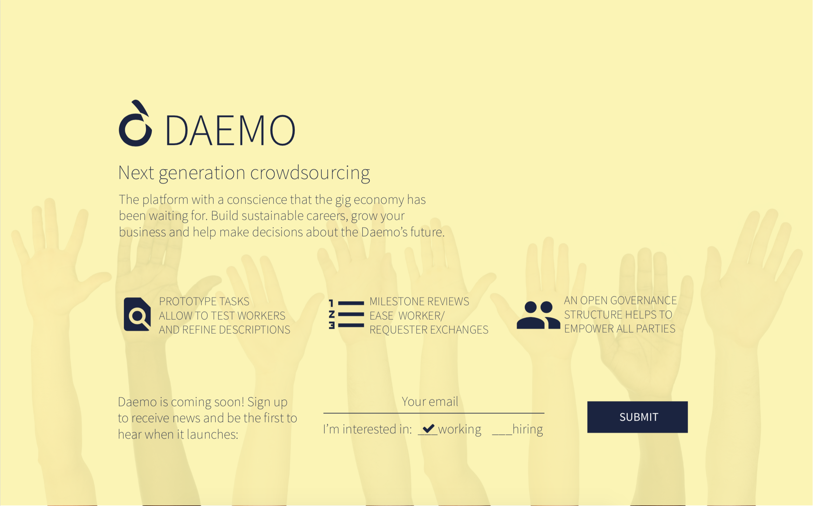

Daemo
December 2014 - December 2015
Daemo is a crowdsourcing marketplace which addresses the challenges of trust and power faced in the existing crowdsourcing platforms, where workers feel disrespected due to unreasonable rejections and low payments, on the other hand the requesters do not trust the result they receive. Daemo was born out Crowd Research collective initiative consisting of designers, engineers, crowd workers and crowd requesters around the world, led by Prof Michael Bernstein and Rajan Vaish from Stanford HCI group.
More information about the Stanford Crowd Research can be found here on their
wiki page
I was involved in the intial stage of the project and contributed to the brainstorming and designing of the initial system. I researched about the existing crowdsourcing marketplaces to understand the challenges faced by the current workers and requesters, documented and prioritized my findings, came up with different prototypes which successfully overcome the challenges discovered and provide a transparent and effective methods to evaluate the work and get compensated appropriately. Below are the links to some of the documentations of my brainstorming research of existing platforms and design ideas.
Milestones
The project started with getting an experience of what it is like to be a worker or requester on current crowd-labor marketplaces. I documented the research papers read about crowdsourcing which can be found
here.
Following weeks focused on narrowing down the learnings from existing marketplaces and research papers, and shortlisting the features to focus on for Daemo. Everyone had to select a subset of design themes from the shortlisted ones from the previous weeks, and elaborate them. My design themes can be found
here.
Next we moved on to prototyping stage. Based on the foundational ideas proposed in the previous weeks, we were asked to propose a new croudsourcing platform by writing an introduction to a mock research paper that summarizes the main contributions of a proposed platform, and how/why you expect that it improves on the current state-of-the-art. My mock research paper can be found
here.
Working Prototype on Balsamiq
On the technical side, I contributed in implemented UI for the initial platform design. Below is one of the pages I implemented.

Our work was published at ACM UIST 2015 conference. Read more
here.